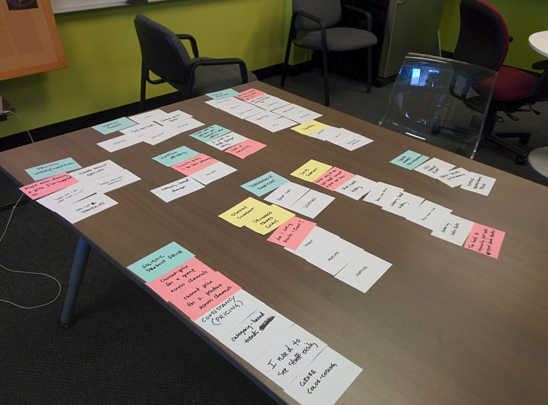
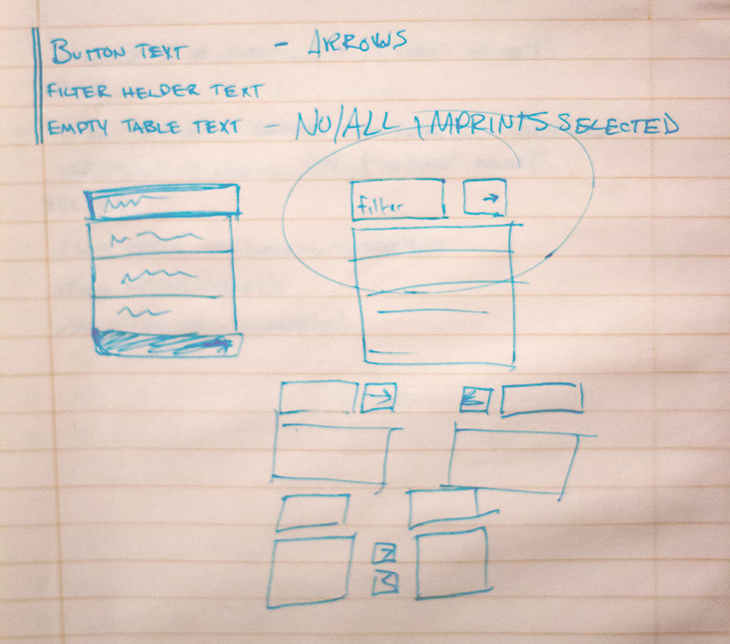
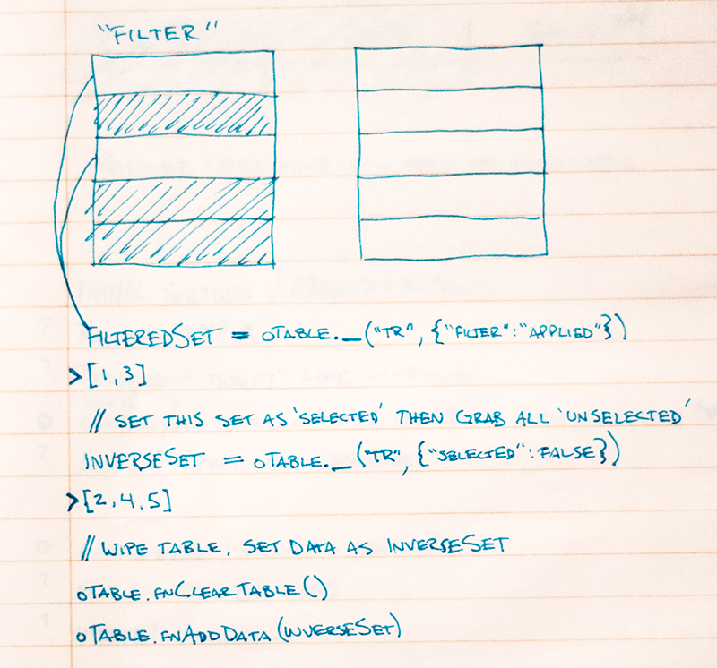
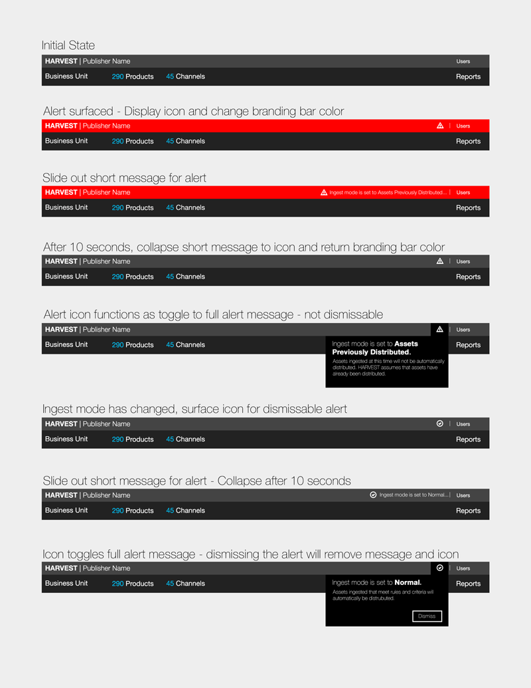

We have functional, we need usable.
When I joined the Harvest team, we had just reached minimum viable product. The pieces were all there and things were working. The experience left a lot to be desired, and that's where I came in.
My role on the project covered everything from user research to interaction design to prototyping to implementation of UI features.
Are we building the right features?
While we had our product team working hard on the business side of things, I was there to help align the business with what users were telling us they needed or were struggling with. To help align our UX strategy with our business strategy, I would lead exercises like affinity mapping.
So, how does it work?
Once expectations were aligned, it was time to start designing features. Lots of sketching and explaining and getting feedback. And often pseudo-code right on the page as design neared the need for a testable prototype.
 See the Pen Report Selector by Bryan Walker (@ironhive) on CodePen.
Documentation
Before production on any feature began, documentation would be provided. Sometimes it was a wireframe, a comp, an interactive prototype (codepen/jsfiddle) or something in between that detailed every possible state.
Typically more complex interactions or highly-visual features would be on my plate for implementation. Time to trade hats and code for production.